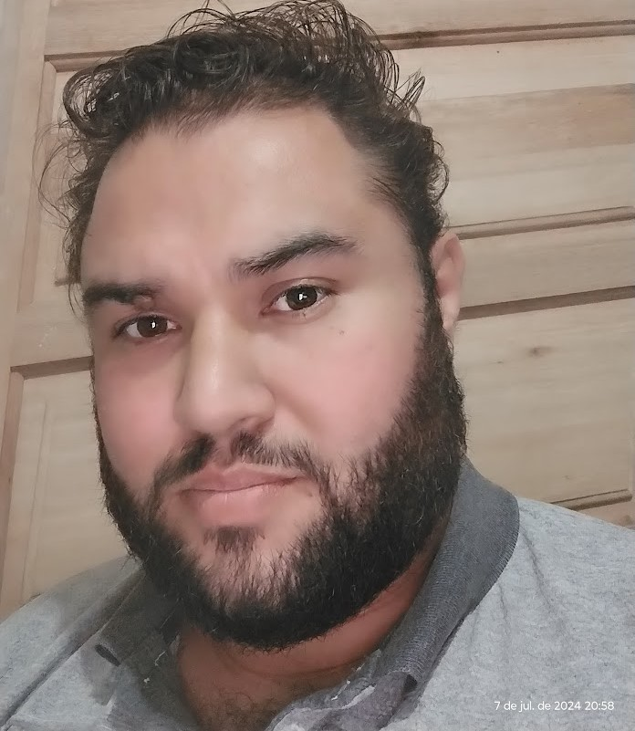

Oi eu sou o Anderson
O que eu faço? 💻🔧
Estou mergulhando fundo no mundo do FRONT END & PROGRAMAÇÃO. Tenho varios projetos super interessantes em andamento que, quem sabe, pode ser o próximo queridinho no mercado! kkkk
Minhas Aventuras Profissionais 🚀
Trabalho como suporte técnico na Teleperformance, onde ajudo a resolver problemas com dispositivos móveis, tablets e computadores. Antes disso, passei por várias experiências desafiadoras, desde manutenção de veículos elétricos até a instalação de equipamentos para postos de combustíveis. Cada uma dessas experiências me ajudou a desenvolver habilidades incríveis em resolução de problemas e atendimento ao cliente.
Por que me conhecer? 🤔
Adoro um bom desafio e estou sempre em busca de novas oportunidades para aprender e crescer. Se você é apaixonado por tecnologia, assim como eu, e quer trocar ideias ou colaborar em projetos inovadores, vamos conversar! Acredito que a troca de conhecimentos é uma das melhores formas de evolução profissional e pessoal.